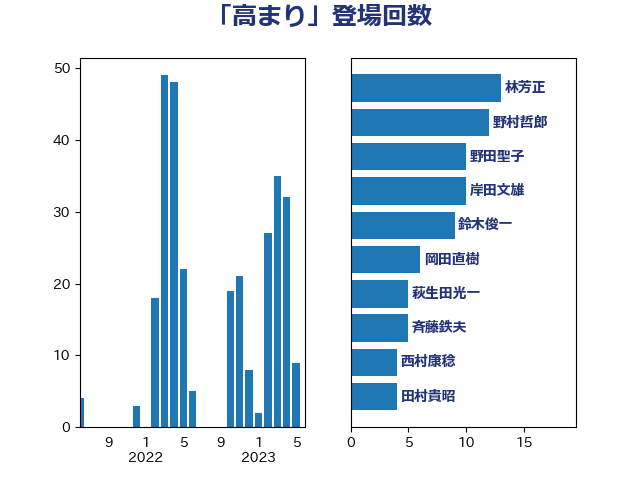

単語「高まり」

| 林芳正 | 自由民主党 | 13 回 |
| 野村哲郎 | 自由民主党 | 12 回 |
| 野田聖子 | 自由民主党 | 10 回 |
| 岸田文雄 | 自由民主党 | 10 回 |
| 鈴木俊一 | 自由民主党 | 9 回 |
| 岡田直樹 | 自由民主党 | 6 回 |
| 萩生田光一 | 自由民主党 | 5 回 |
| 斉藤鉄夫 | 公明党 | 5 回 |
| 西村康稔 | 自由民主党 | 4 回 |
| 田村貴昭 | 日本共産党 | 4 回 |
| 松本剛明 | 自由民主党 | 4 回 |
| 永岡桂子 | 自由民主党 | 3 回 |
| 山口壯 | 自由民主党 | 3 回 |
| 須藤元気 | 無所属 | 2 回 |
| 階猛 | 立憲民主党 | 2 回 |
| 関芳弘 | 自由民主党 | 2 回 |
| 鈴木英敬 | 自由民主党 | 2 回 |
| 穀田恵二 | 日本共産党 | 2 回 |
| 小林鷹之 | 自由民主党 | 2 回 |
| 寺田稔 | 自由民主党 | 2 回 |
| 中川郁子 | 自由民主党 | 2 回 |
| 鰐淵洋子 | 公明党 | 1 回 |
| 高木宏壽 | 自由民主党 | 1 回 |
| 馬場伸幸 | 日本維新の会 | 1 回 |
| 音喜多駿 | 日本維新の会 | 1 回 |
| 阿達雅志 | 自由民主党 | 1 回 |
| 長友慎治 | 国民民主党 | 1 回 |
| 金子恭之 | 自由民主党 | 1 回 |
| 野中厚 | 自由民主党 | 1 回 |
| 重徳和彦 | 立憲民主党 | 1 回 |
| 足立敏之 | 自由民主党 | 1 回 |
| 赤嶺政賢 | 日本共産党 | 1 回 |
| 角田秀穂 | 公明党 | 1 回 |
| 西村明宏 | 自由民主党 | 1 回 |
| 藤木眞也 | 自由民主党 | 1 回 |
| 落合貴之 | 立憲民主党 | 1 回 |
| 若宮健嗣 | 自由民主党 | 1 回 |
| 船橋利実 | 自由民主党 | 1 回 |
| 羽田次郎 | 立憲民主党 | 1 回 |
| 細田健一 | 自由民主党 | 1 回 |
| 簗和生 | 自由民主党 | 1 回 |
| 笠井亮 | 日本共産党 | 1 回 |
| 竹詰仁 | 国民民主党 | 1 回 |
| 竹内譲 | 公明党 | 1 回 |
| 秋野公造 | 公明党 | 1 回 |
| 磯崎仁彦 | 自由民主党 | 1 回 |
| 石田昌宏 | 自由民主党 | 1 回 |
| 石橋通宏 | 立憲民主党 | 1 回 |
| 石橋林太郎 | 自由民主党 | 1 回 |
| 石垣のりこ | 立憲民主党 | 1 回 |
| 石井章 | 日本維新の会 | 1 回 |
| 石井正弘 | 自由民主党 | 1 回 |
| 田村智子 | 日本共産党 | 1 回 |
| 田中健 | 国民民主党 | 1 回 |
| 牧義夫 | 立憲民主党 | 1 回 |
| 牧島かれん | 自由民主党 | 1 回 |
| 牧山ひろえ | 立憲民主党 | 1 回 |
| 瀬戸隆一 | 自由民主党 | 1 回 |
| 滝波宏文 | 自由民主党 | 1 回 |
| 渡辺孝一 | 自由民主党 | 1 回 |
| 深澤陽一 | 自由民主党 | 1 回 |
| 浜田靖一 | 自由民主党 | 1 回 |
| 河野義博 | 公明党 | 1 回 |
| 河西宏一 | 公明党 | 1 回 |
| 武見敬三 | 自由民主党 | 1 回 |
| 櫻井周 | 立憲民主党 | 1 回 |
| 東国幹 | 自由民主党 | 1 回 |
| 村田享子 | 立憲民主党 | 1 回 |
| 杉本和巳 | 日本維新の会 | 1 回 |
| 杉尾秀哉 | 立憲民主党 | 1 回 |
| 末松信介 | 自由民主党 | 1 回 |
| 新妻秀規 | 公明党 | 1 回 |
| 徳永エリ | 立憲民主党 | 1 回 |
| 川田龍平 | 立憲民主党 | 1 回 |
| 山際大志郎 | 自由民主党 | 1 回 |
| 山本香苗 | 公明党 | 1 回 |
| 山崎正恭 | 公明党 | 1 回 |
| 山岸一生 | 立憲民主党 | 1 回 |
| 山口那津男 | 公明党 | 1 回 |
| 小野田紀美 | 自由民主党 | 1 回 |
| 寺田静 | 無所属 | 1 回 |
| 宮崎雅夫 | 自由民主党 | 1 回 |
| 安江伸夫 | 公明党 | 1 回 |
| 大野泰正 | 自由民主党 | 1 回 |
| 城井崇 | 立憲民主党 | 1 回 |
| 吉田統彦 | 立憲民主党 | 1 回 |
| 吉川沙織 | 立憲民主党 | 1 回 |
| 古賀友一郎 | 自由民主党 | 1 回 |
| 古川康 | 自由民主党 | 1 回 |
| 加藤勝信 | 自由民主党 | 1 回 |
| 加田裕之 | 自由民主党 | 1 回 |
| 伴野豊 | 立憲民主党 | 1 回 |
| 伊藤渉 | 公明党 | 1 回 |
| 伊藤孝江 | 公明党 | 1 回 |
| 伊佐進一 | 公明党 | 1 回 |
| 仁比聡平 | 日本共産党 | 1 回 |
| 井上信治 | 自由民主党 | 1 回 |
| 中西祐介 | 自由民主党 | 1 回 |
| 下野六太 | 公明党 | 1 回 |
| 下条みつ | 立憲民主党 | 1 回 |
| 上田清司 | 国民民主党 | 1 回 |
| 三上えり | 立憲民主党 | 1 回 |
| ながえ孝子 | 無所属 | 1 回 |